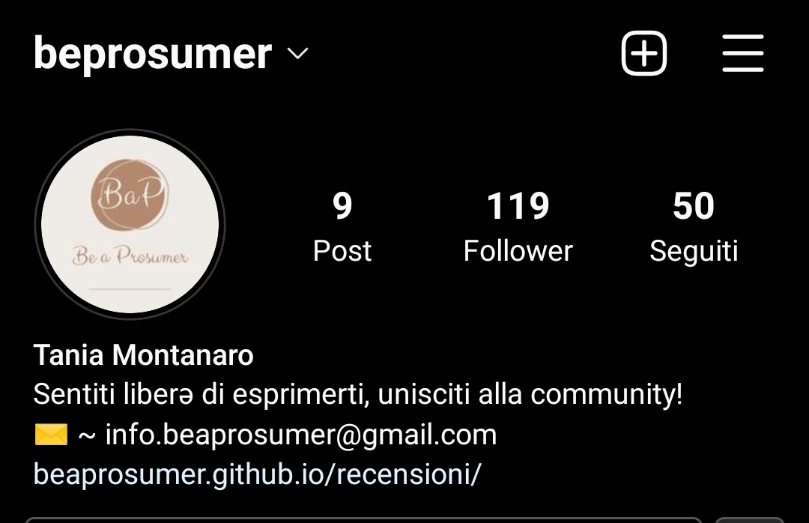

"Be a prosumer" ha come obiettivo principale quello di intrattenere l’utente e metterlo a proprio agio, offrendo l'opportunità di cogliere spunti per nuove letture. È rivolto a tutti coloro a cui piace leggere, ma anche a chi vuole iniziare a farlo, infatti si rivolge a un target vasto ma in particolare ai nati tra il 1980 e il 2000. Il blog è molto semplice e intuitivo, inoltre offre la possibilità all’utente di acquistare il libro di proprio interesse attraverso un semplice click.
Obiettivo: intrattenere gli amanti della lettura e creare una community.
Target utente primario: uomini e donne tra i 20 e i 35 anni.
Competitors: esistono una varietà di siti web di questo genere, tra i più cliccati abbiamo www.anobii.com e www.qlibri.it, entrambi si riferiscono a un target di lettori vasto e presentano una struttura molto articolata.
Organizzazione ad albero:
Wireframe:
Look and Feel:
Ho utilizzato una font sans serif 'Karla' per i titoli e una font serif 'Gentium Plus' per tutto il resto del testo in modo da avere leggibilità ed allo stesso tempo eleganza;
per i colori ho scelto tre sfumature differenti di rosa (#b97bd, #bf79acbf, #d15fb259,), in contrasto con l'header scuro e il footer di una tonalità silver; le sfumature si alternano creando armonia in tutto il sito.
Linguaggi utilizzati: html e css
Strumenti a supporto della progettazione: "sublime text 2" per la scrittura del codice, "bootstrap" per la grafica, "canva" per il logo e le immagini del carosello, "google fonts" per le fonts, "fontawesome" per le icone, "google analytics" per l'analisi dati, "google moduli" per il questionario di gradimento, "github" per la pubblicazione del sito.
Entrambi i competitors presi prima in esame hanno optato per un layout simile ed una struttura abbastanza complessa poiché possiedono una varietà di contenuti, inoltre entrambi utilizano il bianco e il rosso come colori principali, frutto di una scelta standardizzata, tuttavia, la navigazione risulta interessante e piacevole.
A partire dai colori, il mio sito vuole differenziarsi in termini di stile per dare all'utente non solo dei contenuti da fruire, ma una vera e propria esperienza piacevole da godersi. Inoltre mi è sembrato opportuno inserire nelle call to action un pulsante con link esterno per poter acquistare direttamente il libro di proprio piacimento. Quest'ultima scelta ha l'auspicio di poter collaborare in futuro direttamente con le piccole case editrici e/o con gli autori freelance.
Il sito ha un'interfaccia semplice e fruibile da smartphone, questo dà modo all'utente di poter navigare nel sito quando e da dove vuole, requisito fondamentale se si vogliono raggiungere più persone possibili nell'intento di intrattenerle nei momenti più disparati.
Il target a cui il sito rivolge è soprattutto quello di ragazzi e ragazze tra i 20 e i 35 anni, ma anche tutti coloro che cercano un'ispirazione, un suggerimento di nuove letture o semplicemente una community con cui condividere le proprie esperinze di lettura.
Il messaggio è quello di promuovere letture di vario tipo attraverso le recensioni che anche gli utenti possono condividere entrando a far parte della community attraverso la pagina dedicata "be a prosumer".
La promozione del sito web è avvenuta principalmente tramite i social network, in particolare tramite la pagina Instagram dove ho pubblicato diverse storie con il link al sito, e la pagina Facebook dove ho pubblicato dei post al fine di raggiungere il target da me desiderato. Inoltre ho utilizzato molto anche il passaparola e i direct messages.
Mi sono proposta di:
arrivare ad almeno 100 follower su Instagram e 50 follower su Facebook

raggiungere almeno 100 visualizzazioni del sito web
raggiungere il target desiderato e un buon livello di gradimento
L'obiettivo principale menzionato prima è stato raggiunto con successo.
Grazie a tutti per aver partecipato, interagito e condiviso!